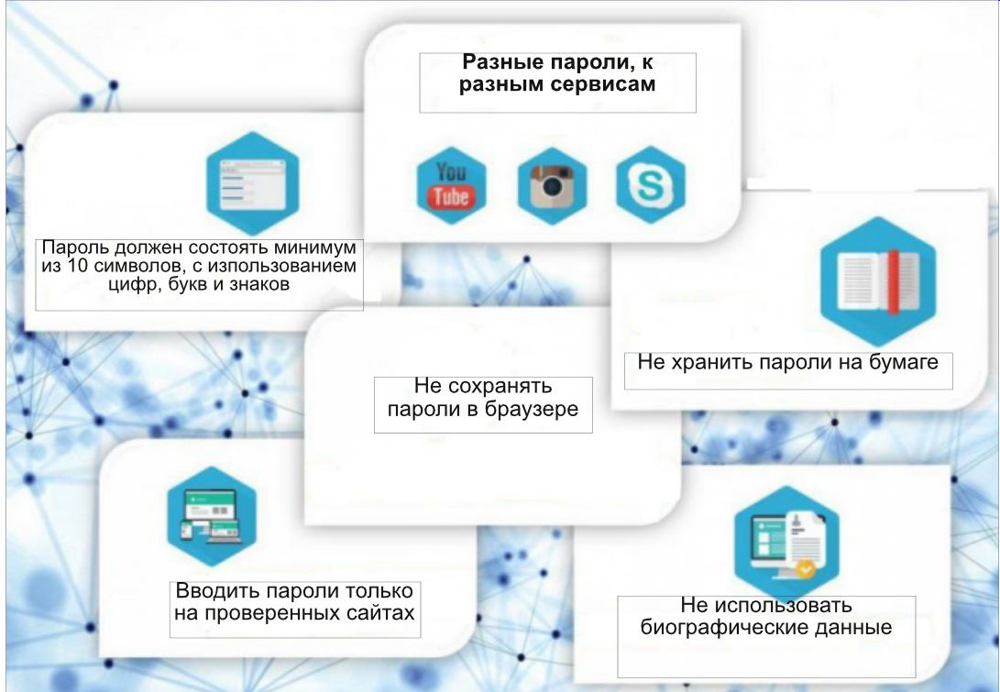
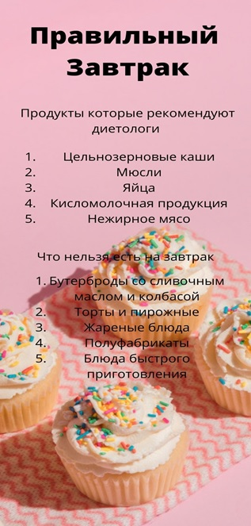
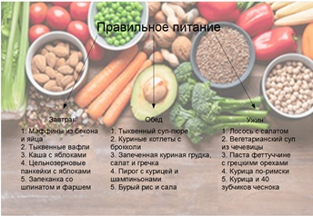

Инфографика — это графический способ подачи информации. Если ещё проще — это информация, поданная в виде картинок. При этом помимо изображений в инфографику могут входить и другие элементы: текст, а также стрелки, диаграммы, блоки и схемы. Но ключевую роль играют именно изображения. Созданием инфографики обычно занимаются графические дизайнеры. Иногда для этого они привлекают иллюстраторов.

Сайты, приложения, социальные сети и поисковые системы постоянно занимаются тем, что собирают информацию о пользователях. Полученные данные используются для анализа интересов посетителей страниц, их покупательной активности и спроса, для изучения целевой аудитории и настроек рекламы. На первый взгляд, это выглядит удобным — браузеры запоминают пароли, хранят данные о поисковых запросах и страницах, которые вы посетили. С другой стороны, этими данными легко могут воспользоваться злоумышленники. Ваш аккаунт могут взломать, а личные данные — передать третьим лицам, которые используют их в мошеннических или других преступных целях. Чтобы этого не произошло, соблюдайте несколько простых правил
 |
 |